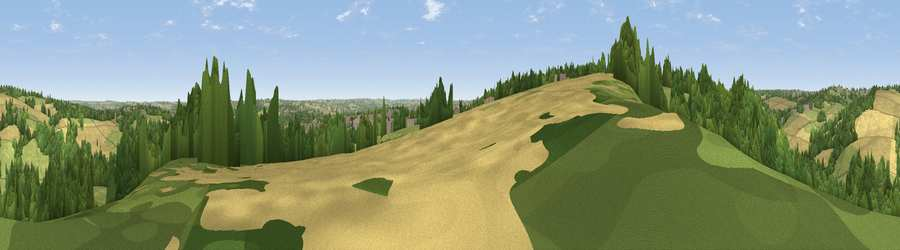

Viewpoint near Marsh Lane
#29579 in England · top 51% of its area beats it · near Marsh LaneThe view, rendered

A 360° render of this exact spot computed from the terrain model, tree cover and land cover — summer colours, afternoon light, calibrated against photographs of famous viewpoints. Real trees, hedges and buildings will differ in detail.
The panorama
Grey silhouette: terrain skyline in each direction (720 bearings, Earth curvature and refraction included). Dashed green: skyline with trees (+15 m) and buildings (+8 m) as obstacles. Blue strip: how far the ground is visible on each bearing.
Where the view opens
Wedge length = distance to the farthest visible ground on that bearing (vegetation-aware). Rings at 10, 25 and 50 km.
What fills the view
40% woodland · 27% cropland · 26% grassland · 7% built-up
Angular shares of the visible panorama (visual magnitude), not map area. Landscape diversity 0.55 (0–1 Shannon).
Key numbers
More beautiful places nearby
The staircase of upgrades: each row has a higher view potential than everything closer. Driving times are estimates from straight-line distance, calibrated against real road routing — check an actual route before setting out.
| Place | Direction | Drive | Score |
|---|---|---|---|
| Viewpoint near Marsh Lane | WSW · 1 km | ~4 min | 52.4 |
| Viewpoint near Marsh Lane | WSW · 2 km | ~5 min | 61.1 |
| Viewpoint near Ridgeway | NNW · 3 km | ~7 min | 67.6 |
| Viewpoint near Holmesfield | W · 12 km | ~23 min | 69.4 |
| Viewpoint near Hathersage | WNW · 16 km | ~29 min | 70.9 |
| Viewpoint near Oughtibridge | NNW · 17 km | ~29 min | 72.5 |
| Viewpoint near Wharncliffe Side | NNW · 19 km | ~33 min | 75.2 |
| Tissington Hill | SW · 38 km | ~56 min | 75.5 |
53.31286, -1.38121 · source: screening · position refined by local search. Computed location — check access rights before visiting.